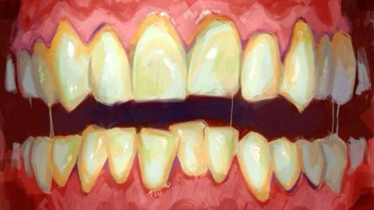

ЗВУК: ВКЛ
M.И.К.
N-NET // ОНЛАЙН
✕

›
N.O.T.H.I.N.G. FOUNDATION
ТЕРМИНАЛ ДОСТУПА НЕАКТИВЕН
[ НАЖМИТЕ, ЧТОБЫ АКТИВИРОВАТЬ ТЕРМИНАЛ ]
N.O.T.H.I.N.G. FOUNDATION
N.O.T.H.I.N.G. FOUNDATION — SYSTEM BIOS v.4.91
COPYRIGHT © К.К.И.р.Д. — КОМИТЕТ КОНТРОЛЯ И РАЗРЕШЕНИЯ ДОПУСКА
N.O.T.H.I.N.G.
инициализация терминала...
0%
ТЕРМИНАЛ ДОСТУПА
Введите учётные данные для входа в систему Фонда. Все сеансы протоколируются К.К.И.р.Д.
ID СОТРУДНИКА
УРОВЕНЬ ДОПУСКА
F — Штатный/офисный персонал (60% Фонда)
I-0 — Общий персонал
I-1 — Внутренний
F-1 — Ограниченный научный
ПАРОЛЬ
Подтверждаю прохождение когнитивной проверки. Отклонений в восприятии не выявлено.
ВОЙТИ В СИСТЕМУ
НЕСАНКЦИОНИРОВАННЫЙ ДОСТУП КАРАЕТСЯ СОГЛАСНО ПРОТОКОЛУ «ПОГРЕБЕНИЕ»
АВТОРИЗАЦИЯ СОТРУДНИКА
N.O.T.H.I.N.G. FOUNDATION — ПЕРСОНАЛЬНЫЙ ТЕРМИНАЛ
90с
ДОСТУП ПОДТВЕРЖДЁН
Уровень допуска зафиксирован. Когнитивный маркер лояльности:
СТАБИЛЕН
.
N.O.T.H.I.N.G.
ЦЕНТРАЛЬНЫЙ АРХИВ ДОКУМЕНТОВ
ДОПУСК: I-0
Ω — ХРАНИЛИЩЕ ЯДРА
« К ЗОНАМ
« НАЗАД К СПИСКУ